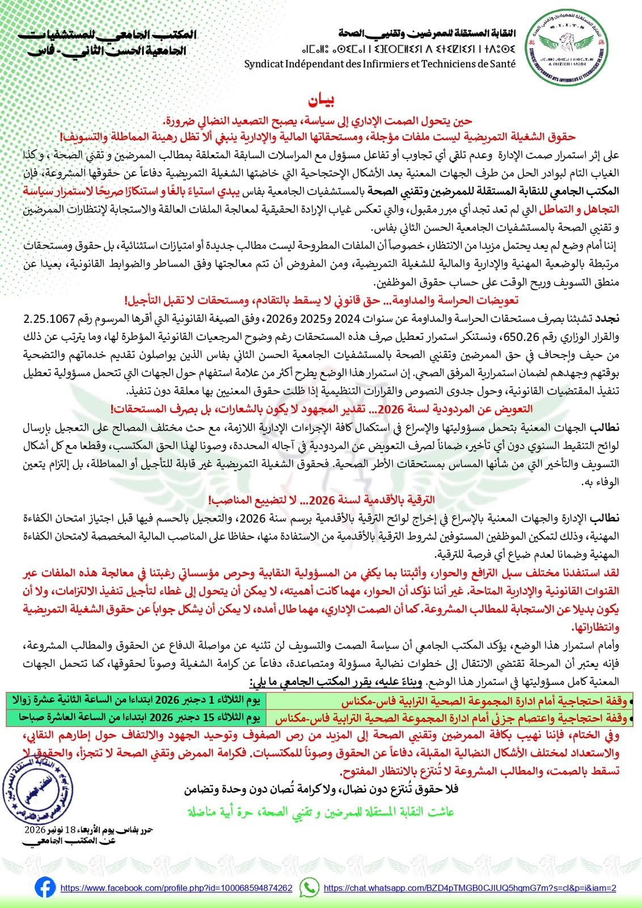

فاس: «حين يتحول الصمت الإداري إلى سياسة، يصبح التصعيد ضرورة»، المكتب الجامعي يعلن وقفتين احتجاجيتين يومي 1 و15 دجنبر

أصدر المكتب الجامعي للنقابة المستقلة للممرضين وتقنيي الصحة بالمستشفيات الجامعية الحسن الثاني بفاس بياناً بتاريخ الأربعاء 18 نونبر 2026، تحت شعار: «حين يتحول الصمت الإداري إلى سياسة، يصبح التصعيد النضالي ضرورة»، عبّر فيه عن استيائه البالغ واستنكاره الصريح لاستمرار سياسة التجاهل والتماطل، في ظل صمت الإدارة وعدم تفاعلها مع المراسلات السابقة المتعلقة بمطالب الممرضين وتقنيي الصحة، وغياب أي بوادر للحل رغم الأشكال الاحتجاجية التي خاضتها الشغيلة التمريضية.
وأكد المكتب الجامعي أن الملفات المطروحة ليست مطالب جديدة ولا امتيازات استثنائية، بل حقوق ومستحقات مرتبطة بالوضعية المهنية والإدارية والمالية للشغيلة، وحدد أبرزها في:
• تعويضات الحراسة والمداومة: التشبث بصرف مستحقات سنوات 2024 و2025 و2026، وفق الصيغة القانونية التي أقرها المرسوم رقم 2.25.1067 والقرار الوزاري رقم 650.26، واستنكار استمرار تعطيل صرفها رغم وضوح مرجعياتها القانونية.
• التعويض عن المردودية لسنة 2026: مطالبة الجهات المعنية بالتعجيل بإرسال لوائح التنقيط السنوي دون تأخير، ضماناً لصرف التعويض في آجاله المحددة.
• الترقية بالأقدمية لسنة 2026: المطالبة بالإسراع في إخراج لوائح الترقية بالأقدمية قبل اجتياز امتحان الكفاءة المهنية، تمكيناً للموظفين المستوفين للشروط من الاستفادة منها، وحفاظاً على المناصب المالية المخصصة للترقية.
وشدد البيان على أن الحوار، مهما كانت أهميته، لا يمكن أن يتحول إلى غطاء لتأجيل تنفيذ الالتزامات، وأن الصمت الإداري، مهما طال أمده، لا يمكن أن يشكل جواباً عن حقوق الشغيلة التمريضية وانتظاراتها.
وبناءً عليه، قرر المكتب الجامعي خوض الأشكال النضالية التالية: - وقفة احتجاجية أمام إدارة المجموعة الصحية الترابية فاس-مكناس، يوم الثلاثاء 1 دجنبر 2026 ابتداءً من الساعة الثانية عشرة زوالاً. - وقفة احتجاجية واعتصام جزئي أمام إدارة المجموعة الصحية الترابية فاس-مكناس، يوم الثلاثاء 15 دجنبر 2026 ابتداءً من الساعة العاشرة صباحاً.
ويهيب المكتب الجامعي بكافة الممرضين وتقنيي الصحة إلى رص الصفوف وتوحيد الجهود والالتفاف حول إطارهم النقابي، والاستعداد لمختلف الأشكال النضالية المقبلة، دفاعاً عن الحقوق وصوناً للمكتسبات.
«فلا حقوق تُنتزع دون نضال، ولا كرامة تُصان دون وحدة وتضامن.»
فتح في تطبيق النقابة